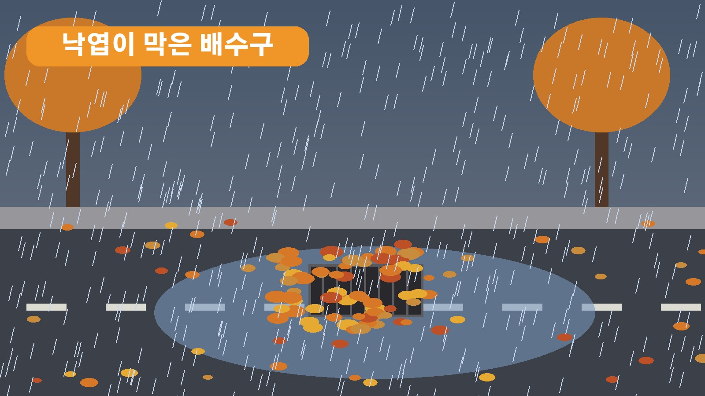
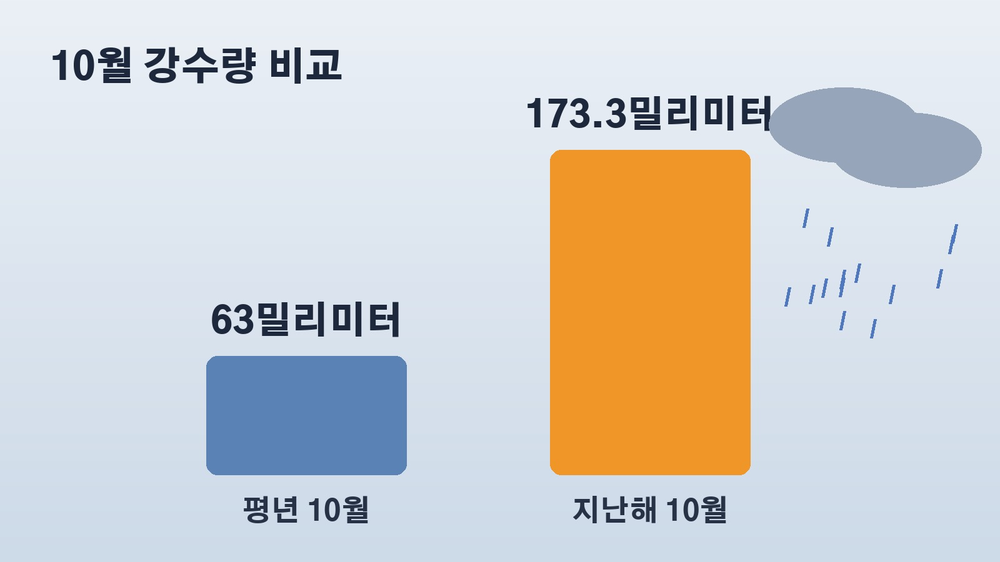

10월 중순 시간당 50밀리미터 비에 잠긴 서울 도로, 배수구 막은 낙엽과 평년보다 많을 가을비 전망
일요일 오후에 갑자기 비바람이 거세져서 놀라신 분들 많으셨을 거예요. 여름도 아닌 10월 중순에 서울 일부 지역에는 시간당 50밀리미터 안팎의 비가 쏟아졌고, 도로가 잠기거나 가로수가 쓰러지는 일이 이어졌어요. 오늘 어디서 어떤 일이 있었는지, 물이 잘 빠지지 않은 이유로 무엇이 꼽혔는지, 그리고 앞으로 가을비가 더 잦을 수 있다는 전망까지 차례로 정리해 볼게요.
18일 오후 서울과 수도권에서 생긴 일
기압골을 따라 비구름이 들어오면서 18일 중부지방을 중심으로 강한 바람을 동반한 비가 내렸어요. 기상청 집계로 오후 4시 기준 서울 강북구의 하루 누적 강수량은 68밀리미터였고, 서울 전역에 40에서 70밀리미터 안팎의 비가 내렸습니다. 강북구와 은평구에는 시간당 50밀리미터 안팎의 폭우가 쏟아졌는데, 여름철에나 볼 법한 수준이라는 평가가 나왔어요.
피해도 곳곳에서 났어요. 서대문구 증산교 하부도로는 오후 3시쯤 물에 잠겨 양방향 통행이 전면 통제됐다가 오후 4시 17분쯤 풀렸습니다. 은평구 연신내역 근처 도로도 빗물이 차올라 차들이 천천히 지나가야 했고, 강남구 역삼동에서는 돌풍에 가로수가 쓰러져 도로를 막았어요. 경기 고양시 일산에서는 쓰러진 나무가 버스를 덮쳤고, 충남 당진의 한 아파트는 오후 2시 32분쯤 강풍에 지붕 일부가 뜯겨 나갔습니다. 인천 완정사거리 일대에서는 침수로 차가 멈춰 소방당국이 차 안에 있던 3명을 구조했어요.
물이 빠지지 않은 이유로 꼽힌 낙엽
이번 침수에서 여러 매체가 공통으로 짚은 것은 낙엽이에요. 가을이라 길가에 쌓인 낙엽이 빗물에 쓸려 배수로를 막으면서 물이 제대로 빠지지 못한 것으로 보인다는 분석입니다. 서울 중랑천 같은 도심 하천도 짧은 시간에 쏟아진 비로 물이 빠르게 불어났어요.
그래서 서울시는 각 자치구와 함께 배수구에 쌓인 낙엽을 치우고, 물이 찬 곳에서는 배수 작업을 하고 있다고 밝혔어요. 기상청도 낙엽 때문에 배수가 원활하지 않아 저지대 침수가 생길 수 있다며 안전사고에 각별히 유의해 달라고 당부했습니다.

서울시 재난문자가 당부한 것
서울시는 이날 오후 재난문자를 보내 많은 비와 강한 바람이 불고 있다며 저지대와 위험 지역 방문을 피해 달라고 했어요. 간판 같은 부착물이 떨어지거나 구조물이 넘어지는 사고에 유의하고, 공사장 근처에는 가까이 가지 말라는 내용도 함께 담겼습니다.
자치구별 안내도 이어졌어요. 영등포구는 낙하물 위험 때문에 영등포동 디지털타워 앞 4차선 도로를 전면 통제했고, 금천구는 가산동과 독산동, 시흥동에 강한 바람이 분다며 입간판과 공사장 가림막, 옥상 방치물로부터 안전을 위해 외출을 자제해 달라고 했어요. 청계천도 오후부터 출입이 통제됐습니다. 오늘 밤까지는 하천 주변 출입을 삼가고 강한 바람에도 계속 대비해야 한다는 게 기상 당국의 설명이에요.
엘니뇨 때문일까, 기상청 3개월 전망
이렇게 늦은 시기의 큰비가 왜 왔는지는 아직 확실하지 않아요. 다만 엘니뇨로 한반도 주변 바다 온도가 올라가 있는 상황이라 올가을은 평년보다 비가 많을 것으로 점쳐지고 있습니다.
기상청은 9월 말 내놓은 3개월 전망에서 10월부터 12월까지 바다 표면 온도가 계속 올라 강한 엘니뇨가 이어질 가능성이 높다고 봤어요. 10월은 서인도양의 높은 수온 때문에 우리나라 남서쪽에 고기압성 흐름이 강해지면서 따뜻하고 습한 공기가 들어와 기온은 평년보다 높고 강수량도 대체로 많겠다고 예상했고요. 11월과 12월도 강수량이 평년보다 많을 확률이 높다고 했습니다.
숫자로 보면 차이가 더 잘 보여요. 한반도의 10월 평균 강수량은 63밀리미터 정도이고 비 오는 날은 약 5.9일인데, 지난해 10월에는 전국 강수량 173.3밀리미터, 강수일수 14.2일로 둘 다 역대 최고를 기록했어요. 올해 10월도 비가 많을 것으로 예상되고 있습니다.

비가 그친 뒤 날씨는 이렇게 바뀐다
이번 비는 중부지방은 18일 밤부터 잦아들고, 남부지방은 19일 오전까지 이어질 전망이에요. 비가 지나간 19일 아침 기온은 서울과 대전 12도, 전주와 대구 15도로 오늘보다 조금 더 내려가고, 낮에도 서울과 대전 20도, 대구와 부산 23도에 머물러 종일 서늘하겠습니다.
화요일에는 남부지방과 제주도에 한 차례 더 비가 오겠고, 기온이 점점 내려가 주 후반에는 5도 안팎의 이른 추위가 찾아올 것으로 보여요. 풍랑과 강풍 특보가 내려진 가운데 여객선 운항에도 차질이 생기고 있어서, 기상 당국은 안전사고가 나지 않도록 계속 대비해 달라고 당부했어요.
정리하면 10월 중순에 여름 같은 폭우가 내렸고, 쌓인 낙엽이 배수구를 막아 물이 잘 빠지지 않았다는 분석이 나왔으며, 기상청은 올가을과 초겨울 비가 평년보다 많을 것으로 내다보고 있다는 이야기예요.
참고한 기사: BBC 코리아 10월 중순에 강풍 동반 호우에 곳곳 침수, 엘니뇨 때문일까(2026.10.18), 한겨레 가로수 뽑혔다, 서울 거센 비바람, 낙엽이 배수로 막아 무릎까지 비(2026.10.18), KBS 지붕 뜯기고 나무가 버스 덮쳐, 곳곳 강풍 침수 피해(2026.10.18), YTN 서울 호우주의보 시간당 50mm, 극한 호우 수준(2026.10.18), 뉴시스 서울시, 많은 비와 강한 바람에 저지대 위험 지역 방문 피해야(2026.10.18)
태그
가을폭우 서울침수 호우주의보 낙엽배수구 강풍피해 엘니뇨 기상청3개월전망 증산교하부도로 서울시재난문자 이른추위